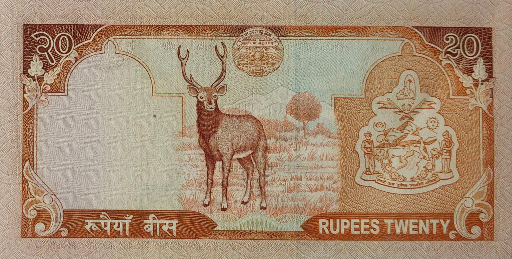

Tilak Bahadur Rawal(Jan 31, 2000 to August 28, 2000) (April 27, 2001 to Jan 17, 2005)

Bijaya Nath Bhattarai(Jan 31, 2005 to June 29, 2007) (July 26, 2009 to March 22, 2010)
- Domination: Rupees 20
- Signature:
- Printer:
- Issued date: Between 1956 to 1973
- Front:
- Back:
- Watermark: Plumed crown
- Size:
Facts:
- 12-Tilak Bahadur Rawal
- 13-Bijaya Nath Bhattarai
- Thomas De La Rue & Company, Ltd, UK
- Bradbury, Wilkinson & Co., UK
- King Mahendra Bir Bikram at upper left, Swayambhu temple at center
- King Mahendra Bir Bikram wearing military uniform with cap at left, image of an idol from
Tushahity (Sundari Chowk, Lalitpur Palace) at center, metallic security thread, seal of NRB at
lower cente Bank at lower center
- Mount Everest at center, Nepal Rastra Bank seal at lower center
- Himalayan landscape with paddy fields in the mountains
- 142 x 68 mm
- 120 x 70mm